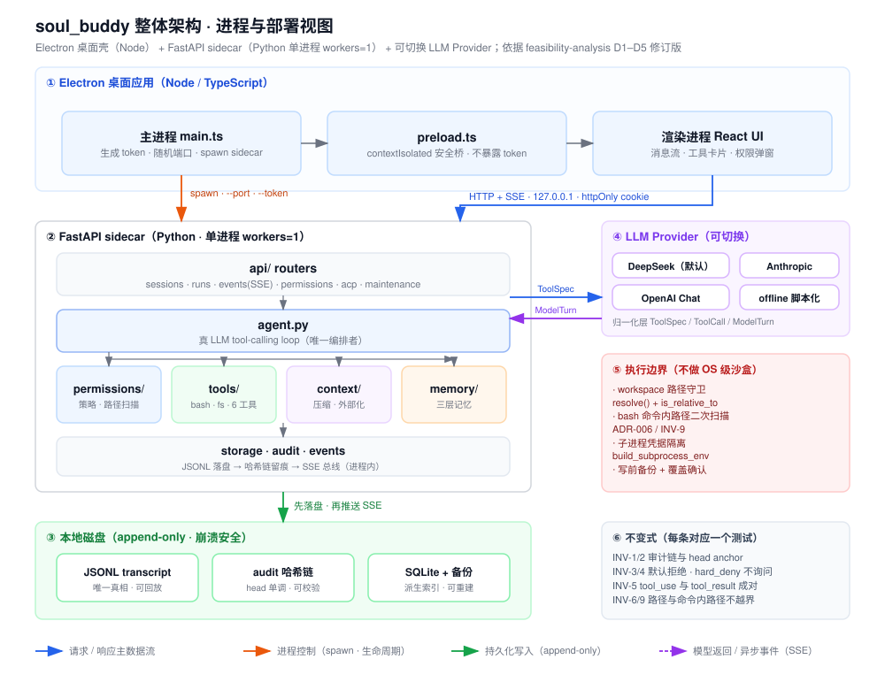
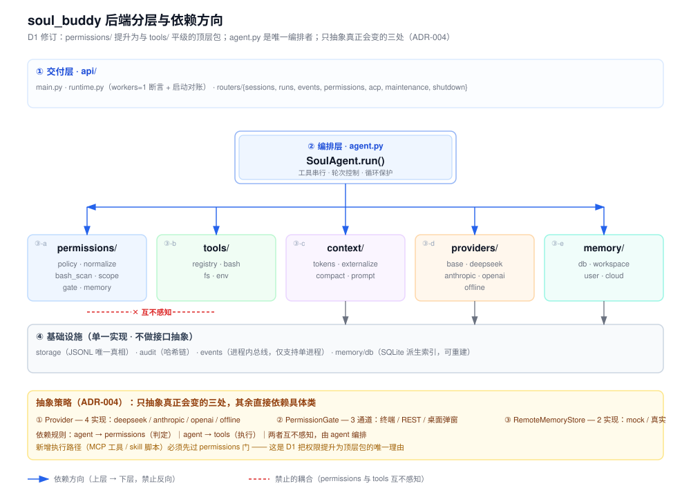
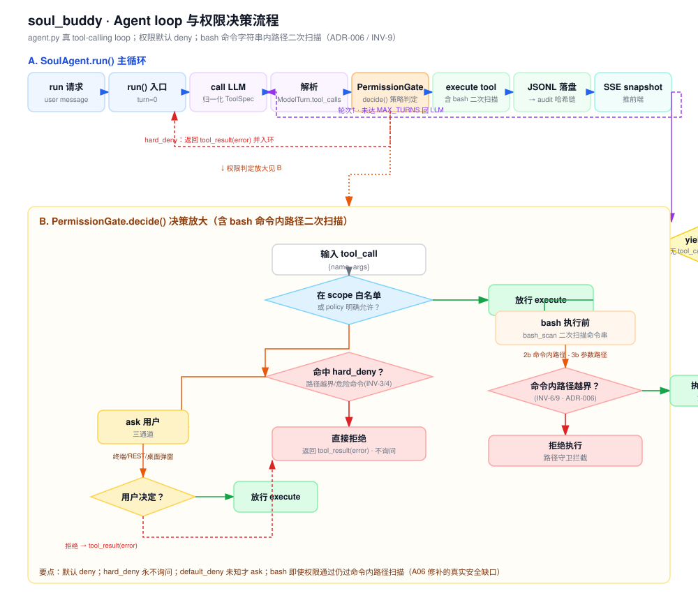
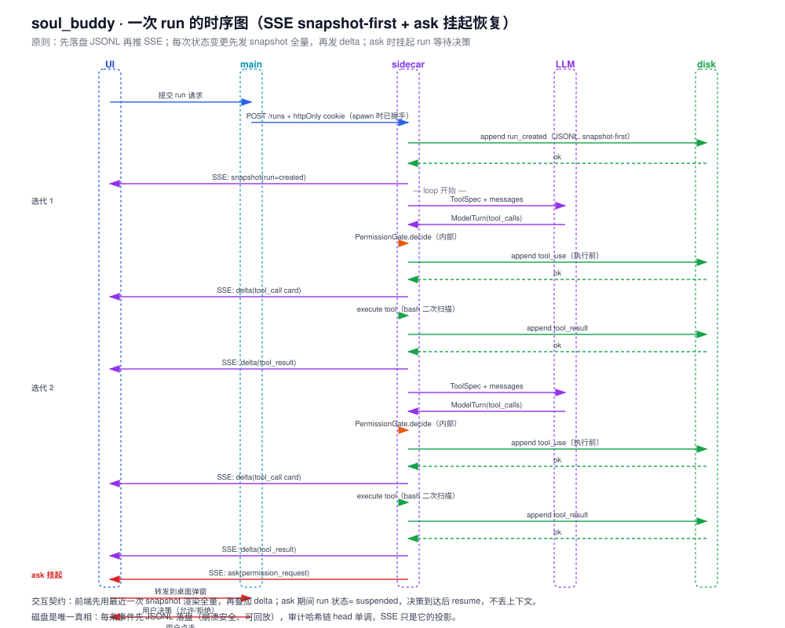
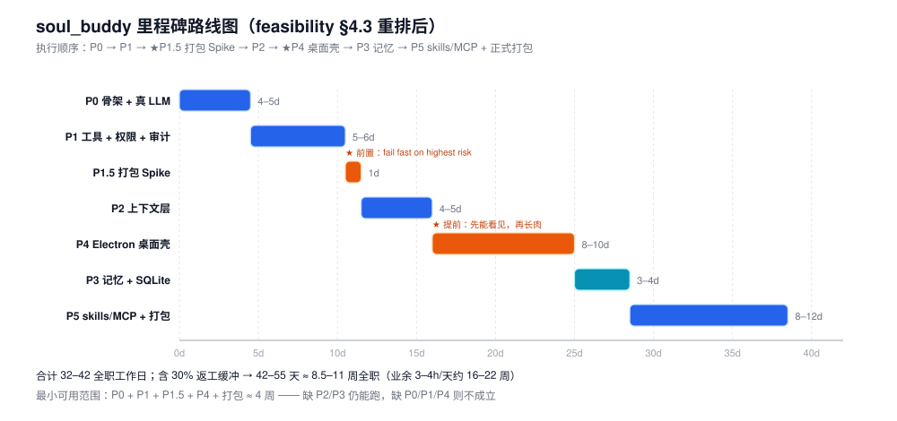

01 · 整体架构 · 进程与部署视图
Electron 桌面壳（Node） + FastAPI sidecar（Python 单进程 workers=1） + 可切换 LLM Provider；含 token/cookie 握手与执行边界。

02 · 后端分层与依赖方向
D1 修订：permissions/ 提升为与 tools/ 平级顶层包；agent.py 是唯一编排者；只抽象真正会变的三处（ADR-004）。

03 · Agent loop 与权限决策流程
agent.py 真 tool-calling loop；权限默认 deny；含 bash 命令字符串内路径二次扫描（ADR-006 / INV-9）。

04 · 一次 run 的时序图
SSE snapshot-first + ask 挂起恢复；先落盘 JSONL 再推 SSE，每条状态变更先 snapshot 后 delta。

06 · 里程碑路线图
feasibility §4.3 重排后执行顺序：P0→P1→★P1.5 打包 Spike→P2→★P4 桌面壳→P3 记忆→P5 skills/MCP + 正式打包。

生成方式：python _gen_arch.py（01/02/06）与 python _gen_flow.py（03/04）输出同目录 SVG，可编辑重生成。